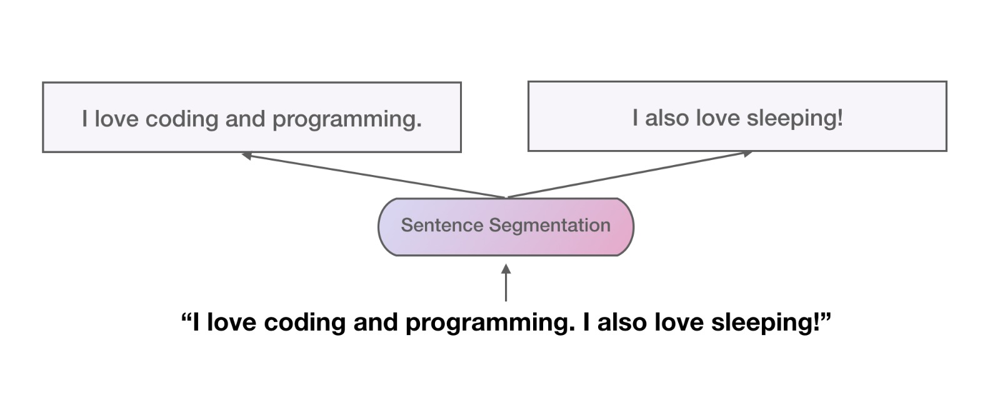
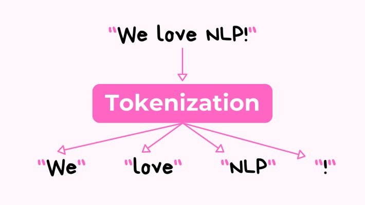
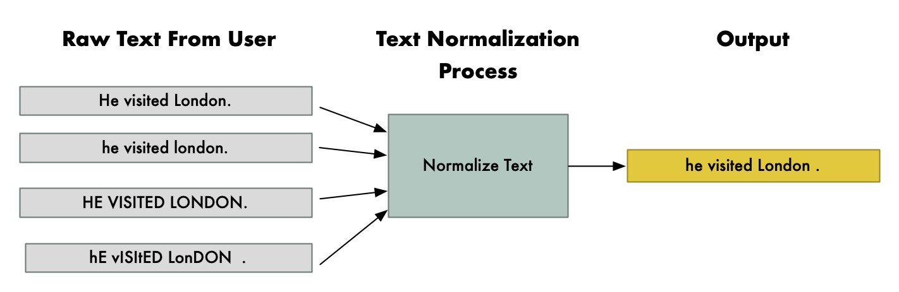
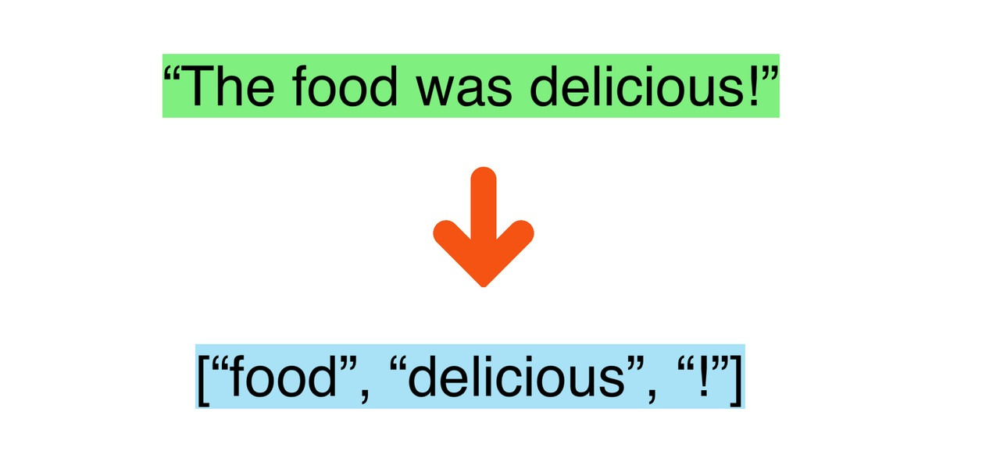
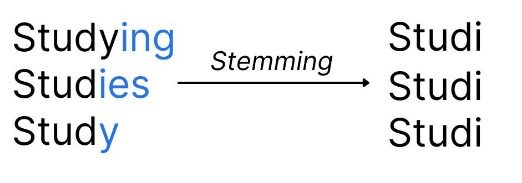

NLP Knowledge Artifact Repository
Concept Cards Explorer
Sentence Segmentation
The set of structural rules governing the composition of clauses, phrases, and words in a given natural language. .

Tokenization

Case Normalization

Stop-word Removal

Stemming
A set of strictly defined programmable instructions that do not use machine learning. (such as the Porter). Place the items to be removed in the Stemmer) without viewing them. Suffixes such as “-ing” or “-ed”.

Lemmatization
Categorizing words based on their grammatical role, such as Noun, Verb, or Adjective. ), then uses a vocabulary database to find the root.
Noise Removal
Text Cleaning
Bag of Words (BoW)

N-Grams
N-grams where N=2 and N=3, representing sequences of two and three adjacent words. = 2 words, Trigrams = 3 words).
Term Frequency (TF)
Inverse Document Frequency (IDF)
TF-IDF
A large, structured collection of machine-readable texts used for linguistic analysis. .
One-Hot Encoding

Word Embeddings
![Word Embeddings]()
Word2Vec
Two main Word2Vec architectures: CBOW predicts the center word from context, while Skip-gram predicts context from the center word. ) and guessing a word. Determine the meaning of a target word when it is used in text. The most popular models are skip-gram (predicting neighbours given a word) or the other way around (predicting a word given its neighbours).
FastText
Contextual Embeddings
Bidirectional Long Short-Term Memory: A neural network that reads data forwards and backwards. [5]Bi-LSTM / RNN
Bidirectional LSTM: a neural network architecture that processes context in both forward and backward directions. ( ELMo [8]ELMo
ELMo uses Bi-LSTMs for contextual representations, while BERT uses Bidirectional Transformers. ) or self-attention Read the full text of the article on networks (BERT). Brings both the context from the beginning and the context from the end, before making the word's vector representation.
Statistical Language Models
Conditional probabilities assuming that the next state depends only on the current state (Markov property). : \(P(W_n | W_{n-1}, ..., W_1)\).
Neural Language Models
Recurrent Neural Networks and Long Short-Term Memory networks, designed for sequential processing. , LSTMs) to predict sequence probabilities.
Transformer-based Representations
An attention mechanism relating different positions of a single sequence in order to compute a representation of the sequence. " To read and understand complete sentences.
Generative Pre-trained Transformer: a decoder-only architecture designed for generative text tasks. generating essays.

Comparative Analysis
1. Stemming vs. Lemmatization (Darpan Kotak)
| Feature | Stemming | Lemmatization |
|---|---|---|
| Working Mechanism | Set up the rules to remove suffixes. | Look up the words in the dictionary; identify the word's linguistic roots. |
| Computational Complexity | Fast. \(O(1)\) constant time. | Slower. Needs Parsing Database and Part of Speech Tagging. |
| Strengths | Conserves disk and memory space; does not need a database. | Produces authentic and linguistically sound word stems. |
| Weaknesses | Too many stems and not enough stems makes gibberish tokens. | Lookups into the dictionary make the execution time slower. |
| Suitable Applications | Simple retrieval systems, search engine indexers. | Conversational AI, machine translation, chatbots. |
2. Term Frequency (TF) vs. TF-IDF (Param Maru)
| Feature | Term Frequency (TF) | TF-IDF |
|---|---|---|
| Working Mechanism | Computes raw frequency of a word in a given document. | Multiplies the term frequency by the rarity of the term in the entire corpus. |
| Computational Complexity | Very Low. Single pass over the document. | Low. Needs computation of overall statistics for the entire corporation. |
| Strengths | Easy to calculate; serves as a foundation for individual documents. | Points to specific, context-specific vocabulary. |
| Weaknesses | Over-emphasizes common words such as "the", "is. | Creates large, sparse, high dimensional arrays. |
| Suitable Applications | Simple document level filters, word clouds. | An automated article tagger, search engine search indexing. |
3. Word2Vec vs. FastText (Param Maru)
| Feature | Word2Vec | FastText |
|---|---|---|
| Working Mechanism | Assigns continuous dense vectors to whole words. | Maps sub_word_chunks to vectors and adds them up. |
| Computational Complexity | Moderate. Fast shallow neural net training (FIST). | High. Overhead of extensive n-gram dictionary for character set. |
| Strengths | Good semantic analogies and syntax mapping for clean text. | Corrects simple errors, colloquialisms, and Out-Of-Vocabulary (OOV) words. |
| Weaknesses | Fails completely on words that are not shown (returns Null or random vector). | Requires a lot of disk space and memory to train. |
| Suitable Applications | General classifiers, recommender systems. | Tweet parsing (Twitter/Reddit), dataset with typos. |
4. Statistical vs. Neural Language Models (Darpan Kotak)
| Feature | Statistical LMs (N-Grams) | Neural LMs (RNNs/LSTMs/Transformers) |
|---|---|---|
| Working Mechanism | Calculations of Markov chain frequencies for short sequences of tokens. | Smoothes over values to create continuous representations in the hidden layers. |
| Computational Complexity | Large N-grams require a high RAM, while mathematical operations require fast CPU. | Very high, should be actively trained on the GPU. |
| Strengths | Very predictable, lightweight and mathematically clear. | Maintains extended dependencies and complex sentences. |
| Weaknesses | No attention to synonyms or out-of-order syntax. | Takes on the role of a "black box": hallucinates facts. |
| Suitable Applications | Basic phone keyboard auto-completions, spell checkers. | Machine translations, automated summarizing/generation of text. |
5. One-Hot Encoding vs. Word Embeddings (Darpan Kotak)
| Feature | One-Hot Encoding | Word Embeddings (e.g. Word2Vec) |
|---|---|---|
| Working Mechanism | Vocabulary indices: sparse binary vector matching. | Dense continuous vectors obtained via neural contexts. |
| Computational Complexity | Zero (lookup tables for simplicity). | Moderate to High. Needs model loading and calculations. |
| Strengths | Easy to interpret, not pre-trained, quick for small vocabulary. | Expands on semantic and syntactic relationships. |
| Weaknesses | Very sparse matrix and no semantic dimension. | Complex vector interpretation, needs a high level of pre-training. |
| Suitable Applications | Simple categorical encoding, baseline classifiers. | Deep translation models, semantic search, modern text tagger. |
Workflow Diagrams
1. Complete Text Preprocessing Pipeline (Darpan Kotak)
graph TD
A([Raw Unstructured Text]) --> B[Noise Removal]
B -->|Strip HTML & URLs| C[Case Normalization]
C -->|Convert to Lowercase| D[Sentence Segmentation]
D -->|Split on Punctuation| E[Tokenization]
E -->|Break into Words/Tokens| F{Filter Stop-words?}
F -->|Yes| G[Remove 'the', 'is', 'and']
F -->|No| H{Choose Morphological Strategy}
G --> H
H -->|Prioritize Speed| I[Stemming]
H -->|Prioritize Grammar| J[Lemmatization]
I --> K([Cleaned Token Sequence])
J --> K
2. Feature Engineering Pipeline (Param Maru)
graph LR
A([Cleaned Tokens]) --> B{Select Feature Extraction}
B -->|Basic Counts| C[Bag of Words]
B -->|Keyword Importance| D[TF-IDF Weighting]
B -->|Local Phrase Context| E[N-Gram Extraction]
C --> F([Sparse Feature Matrix])
D --> F
E --> F
F --> G([Machine Learning Model Input])
3. Text-to-Vector Transformation Process (Param Maru)
graph TD
A([Input Vocabulary]) --> B{Select Representation Mode}
B -->|Discrete / Sparse| C[One-Hot Encoding]
B -->|Continuous / Dense| D[Word Embeddings]
D -->|Whole Word Target| E[Word2Vec]
D -->|Sub-word Target| F[FastText]
D -->|Dynamic Context| G[Contextual Embeddings]
C --> H([Vector Space Output])
E --> H
F --> H
G --> H
Real-World Applications
1. Search Engines (e.g., Google, Bing)
Authors: M. D. Arjuna and M. G. Shefali.This is a comprehensive research paper that introduces relevant NLP concepts such as Tokenization, Lemmatization, TF-IDF.
When searchers input a query into a search engine, they will sometimes use a shoddy query, informal language. The search engine has to break the query down into tokens, find the root Words which can be found via lemmatization (so a search for "running" matches pages containing "run"), and use TF-IDF to identify keywords that are important rather than filler words.
Expected benefits: Users get highly relevant search results almost instantly, Even if they misspell words or use verb tenses that are incorrect.
2. Customer Support Chatbots
Using appropriate NLP techniques: Sentence Segmentation, Contextual Embeddings.
Why they are needed: Chatbots should be able to comprehend the purpose of a customer's query. Do not match keywords, match message. Contextual embeddings help the bot determine that "my app" refers to a specific app rather than any other. Although the words "froze" and "the application is unresponsive" sound similar, they actually have exactly the same meaning. are different.
Expected benefits: Companies can offer automated customer support, which is available to customers around the clock. actually addresses problems instead of providing vague and frustrating answers.
3. Sentiment
Analysis[15]Sentiment Analysis
The use of NLP, statistics, and text analysis to identify, extract, or quantify subjective information and emotion. on Social Media
These are some of the concepts used in NLP that are relevant.
Why they are needed: With all the hashtags, emojis and links in text-based social media, you need them. that need to be cleaned out using noise removal. After all, N-grams are important here when cleaned. phrases such as "not good"; otherwise the model may think the word "good" and mistakenly think the review is positive.
Possible gains: Brands can monitor public opinion in real-time, enabling them to Be quick to respond to a negative PR situation or product complaints.
4. Machine
Translation[14]Machine Translation
The use of software to translate text or speech from one natural language to another. (e.g., Google
Translate)
The NLP concepts used are: Sub-word Tokenization, Word2Vec, Transformer-based. Representations.
The reason for their need: Languages use entirely other sentence structures. Word embeddings are required to translate the meaning of an English word to a latent space in which translators work. Then translate the same meaning into mathematical space, and then translate the same meaning into French or Hindi word.
Outcome 2: Romanticise the language of international communication, highlighting its beauty and uniqueness.Outcome 2: Romanticise the language of international communication, emphasising the beauty and uniqueness of this. Trade, travel and interculturalism.
5. Automated Text Summarization
The following concepts of NLP are relevant: Stop-word Removal, TF-IDF, Neural Language Models.
Why they're required: Legal documents and medical records are too much to deal with.
long. Extractive
To summarize, TF-IDF is used to summarize the content Extractive summarization [13]Extractive Summarization
Selecting and combining key sentences directly from the source text to generate a summary..
find the most statistically significant sentences
In a document and extracts them to produce a fast review, filtering out the fluff.
The benefits expected: Saving doctors, lawyers and researchers hours of reading time. By turning 50 page reports into one page executive summaries.
Research and Industry Insights
Research Developments
- Model
Model Quantization [16]Model Quantization
Reducing neural network size and latency by representing weights with lower-precision data formats. for Edge AI [17]Edge AI
Running machine learning algorithms locally on hardware devices rather than cloud servers. : As In the example above, the language models expand to billions of tokens. The parameters, they are compute-intensive and need huge data centers to operate. Researchers are doing 2D research. The blog entry on "Quantization" explains mathematically how to squeeze these massive models together (e.g., 16-bit to 8-bit). To count to 4-bit accurately, but without losing grammatical correctness. This enables strong NLP to be executed. saving bandwidth and on low-power devices like smartphones, saving costs and bandwidth of cloud computing. energy. - Improved Multilingual Sub-word Tokenization: Historically, NLP models were biased towards English, and used basic space-based tokenization. Current Each and every research is greatly centered on sub-word tokenization algorithms such as Byte-Pair, Word n-gram, Char n-gram, and Word-Pair. Continuous-script or morphologically rich languages, such as Mandarin, are the target of encoding designed by Encoding. and Hindi. These tokenizers break words into common character segments, which are called subword tokens.These tokenizers segment words into the common segments of characters, known as subword tokens. Significantly minimise “Out of Vocabulary” errors and develop more inclusive global models.
Industrial Applications
- Automated Medical Coding: Hospitals produce tons of data regarding the treatment of patients. Handwritten prescription and typed clinical notes as unstructured data. The Today, industry is using NLP pipelines with medical lemmatization in order to scan these documents. automatically. The software is able to retrieve patient symptoms and diagnoses, mapping them to the appropriate fields. directly to standardized insurance billing codes, drastically reducing Administrative procedures and human mistakes in billing.
- Financial Compliance Monitoring: Banks are expected to monitor millions of new
transactions every day.
To deter insider trading, employee e-mail and chat logs are kept. Financial institutions
use names.We use named at financial institutions.
Determine the relationships among mentions within the sentence.Use Named Entity
Recognition (NER) [18]Named Entity Recognition (NER)
Information extraction task to identify entities like people, organizations, or locations in text. and contextual embeddings to see how mentions are related to each other in the sentence. automatically scan these communications. NER automatically recognizes companies, stock ticker and employee names in unstructured text and highlight the items as high-risk names. Communicates with others in real time and filters out confidential data prior to compliance. breached.
Framework Highlight
Open-Source Tool: Hugging
Hugging Face [19]Hugging Face Transformers
A community platform hosting open-source AI models, datasets, and high-level wrappers for NLP pipelines. ( transformers &
tokenizers libraries)
To creating a technology that can understand and interpret human speech.From building To building a technology that understands and interprets human speech. from scratch to leveraging collaborative and open-source ecosystems. AI frameworks such as Hugging Face are extremely relevant because they popularize AI; they make it possible for everyone to use it: students in computer engineering and small startups to download pre-trained, state-of-the-art computer vision models.computer engineering students and small startups to download pre-trained, state-of-the-art computer vision models. Build AI-powered language models, and deploy them in a matter of lines of code. This change has resulted in the modern industry is not much on the proving of the underlying math, it's more on the practical. To the engineering side, in particular, how to do this in an efficient manner to clean data and optimize feature pipelines for. visualize, and shrink these big open-source models to be run sustainably in real-world business environments.
Sustainability & Societal Impact
Language and empowerment in society
Natural Language Processing: Language Accessibility [21]Language Accessibility
Provisions to make language, information, and tools easy to find and understand for all users. : Natural Language Processing is
not simply a way to make software smarter; it is actively doing it!
helping to build a more inclusive and equitable society. The one thing that NLP has had the greatest
effect on is
Council's contribution to Regional
Language Regional Language Technologies [20]Regional Language Technologies
Computational technologies adjusted and translated to support native, smaller regional dialects. and Language
Accessibility. An enormous section of
The internet is now written in English and leaves millions of people in developing countries out of
it.
vital digital resources. By developing strong text preprocessing pipelines and word embeddings for
Rural communities, underrepresented languages (such as Marathi, Tamil or Swahili) developers can
contribute
with critical Citizen
Citizen Services [22]Citizen Services
Administrative, agricultural, or educational services delivered online by governments to citizens. . This allows a local
Farmer to retrieve weather information, market prices,
Content and government help portals completely in their mother tongue.
Educational
Educational Inclusion [23]Educational Inclusion
A movement to enable education quality for remote, disabled, or marginalized students. & Assistive
Tech: Also, NLP is a key catalyst for Educational Inclusion. Using machine translation with precise
accuracy and
There is a potential for students in remote regions to get access to the best educational resources,
via text summarization,
Research papers, and books from all over the world. Assistive
Assistive Technologies [24]Assistive Technologies
Hardware and software that help individuals with disabilities execute tasks autonomously. based on NLP, such as.
as screen readers and predictive text, are also life-changing for visually impaired individuals or
A person with a motor disability, with the independence to maneuver the digital world.
seamlessly.
Environmental Sustainability & Green Computing: From an
environmental perspective.
standpoint, the concepts learned in Week 1 are critical for green
green computing [25]Green Computing
Eco-friendly use and development of hardware and software (in NLP, training lightweight models to save power). . Training massive AI
models uses huge data centres which consume massive quantities of power and add to a
high carbon footprint. Here, smart feature engineering and text preprocessing come into play.
essential. Removing noise and stop-words systematically in order to use efficient vectorization of
the document.
With techniques such as TF-IDF, engineers can significantly reduce the size of their datasets.
Processing smaller,
Models train much faster and require much less energy when they are cleaner. By prioritizing these
With efficient coding practices, we can be certain that artificial intelligence brings about the
progress of the society.
without taking any toll of the Earth's environment.
Alignment with UN Sustainable Development Goals: These NLP developments will finally align with the UN Sustainable Development Goals. Support a number of the United Nations Sustainable Development Goals (UN SDGs). By breaking down language The expansion of digital access to marginalised groups and barriers, Regional Language Technologies. champion SDG 10 (Reduced Inequalities) and SDG 9 (Industry, Innovation and Infrastructure). Moreover, the use of assistive tools and global translation pipelines directly contribute to SDG 4 (Quality). By making knowledge accessible to everyone (Education) Finally, efficient text preprocessing and A lightweight feature engineering is directly in line with SDG 13 (Climate) Action), to ensure the steady and sustainable development of the AI industry.
Individual Reflections
Darpan Kotak (Roll: 38, PRN: 124BTCM1108)
It always seemed to me that data processing was only about numbers, before going into this repository. The quantitative work I have done with Python and Power BI, and spreadsheets. Moving to NLP made me think that raw human language is totally unstructured and it's actually rather a lot “Before a computer can do anything with it, of forceful cleaning is required.”
I found writing out the steps for Tokenization and Stemming a big "aha" moment; it connected. Directly applying our theoretical computer science concepts to current AI engineering. Creating the workflow diagrams were helpful to me to see NLP as an assembly line: if you screw up the noise removal... At the beginning, you will only learn junk at your end machine learning model. I’m really looking Next, I'm going to go on to using Word2Vec on actual sets of data and observing the groupings that it does mathematically. together.
Param Maru (Roll: 41, PRN: 124BTCM1141)
My primary interest in this project was on the feature engineering aspect, how to transform the raw data into... words into numbers. It was very interesting to do research on TF-IDF, as you can see, the mathematics behind the calculation of TF-IDF make it interesting. The poignant "so much sense.
It is interesting that the term frequency times the inverse document frequency (IDF) gives the significance of the term in the document. naturally excludes any filler words that are not interesting; emphasises what the main text is about. I found that you don't have to use complicated neural nets if you compare TF-IDF to a simple Bag of Words! uses networks to solve a problem; sometimes, a basic statistics solution does the job perfectly and Saves a considerable amount of computing resources. The feature extraction pipeline was truly finished by building out. my understanding of how critical it is to choose the right mathematical representation for the Specific problem you are working on.
Contribution Matrix
| Task Area | Darpan Kotak | Param Maru |
|---|---|---|
| Section A (Concepts) | Language Models (All 3) Text Preprocessing (All 8) | The Course Skills consist of two components: Feature Engineering (All 5) and Language Representation (All 5). |
| Section B (Comparisons) | The following methods are explained by the authors.The authors explain the following methods.Stemming vs Lemmatization Statistical vs Neural LMs One-Hot vs Word Embeddings | TF vs TF-IDF Word2Vec vs FastText |
| Section C (Workflows) | Text Preprocessing Pipeline | Pipeline for Feature Engineering: Text-to-Vector. |
| Sections D, E & F | Reflections, Applications | Reflections, Research & Sustainability |
| Total | 17 (50%) | 17 (50%) |
Academic References & Citations
- ↩ Hunston & Sinclair (2000). Resource / DOI | Wikipedia
- ↩ Hayes-Roth (1985). Resource / DOI | Wikipedia
- ↩ Schmid (1994). Resource / DOI | Wikipedia
- ↩ Francis & Kucera (1979). Resource / DOI | Wikipedia
- ↩ Hochreiter & Schmidhuber (1997). Resource / DOI | Wikipedia
- ↩ Cavnar & Trenkle (1994). Resource / DOI | Wikipedia
- ↩ Mikolov et al. (2013). Resource / DOI | Wikipedia
- ↩ Devlin et al. (2018). Resource / DOI | Wikipedia
- ↩ Markov (1913). Resource / DOI | Wikipedia
- ↩ Jordan (1986). Resource / DOI | Wikipedia
- ↩ Vaswani et al. (2017). Resource / DOI | Wikipedia
- ↩ Radford et al. (2018). Resource / DOI | Wikipedia
- ↩ Luhn (1958). Resource / DOI | Wikipedia
- ↩ Weaver (1949). Resource / DOI | Wikipedia
- ↩ Pang & Lee (2008). Resource / DOI | Wikipedia
- ↩ Han et al. (2015). Resource / DOI | Wikipedia
- ↩ Shi et al. (2016). Resource / DOI | Wikipedia
- ↩ Lample et al. (2016). Resource / DOI | Wikipedia
- ↩ Wolf et al. (2020). Resource / DOI | Wikipedia
- ↩ Joshi et al. (2020). Resource / DOI | Wikipedia
- ↩ Shneiderman (2000). Resource / DOI | Wikipedia
- ↩ Layne & Lee (2001). Resource / DOI | Wikipedia
- ↩ UNESCO (2009). Resource / DOI | Wikipedia
- ↩ Bhowmick & Hazarika (2017). Resource / DOI | Wikipedia
- ↩ Strubell et al. (2019). Resource / DOI | Wikipedia